SICHUAN-STYLE FISH-FRAGRANT EGGPLANT
|
Yield Serves 4 |
Active Time 25 minutes Total Time 25 minutes |
For homemade pickled chiles, see here. If you prefer a milder version of the dish, omit the pickled chiles and use distilled white vinegar in place of the pickling liquid in the sauce. The ground pork is optional. If you omit it, the dish is entirely vegan.
This is another yuxiang (fish-fragrant) dish that, like Shredded Chicken with Pickled Chiles and Carrots (here), contains no seafood. You stir-fry eggplant until smoky and tender, then toss it with a quick sauce flavored with chiles, garlic, ginger, vinegar, and sometimes minced pork, for a flavor-packed dish that comes together in one wok with minimal effort.
Cooking the dish at home is pretty straightforward, and the effort-to-flavor ratio is off the charts. The only tricky part is handling the eggplant. It needs to be steamed, salted, or brined before being stir-fried to break down its structure a bit and allow it to cook without absorbing excess moisture. (See “Buying and Salting Eggplants for Stir-Fries,” here.)
Eggplant really benefits from a nice deep browning. Plain eggplant is bland. Mushy, watery, insipid—it’s no wonder so many people dislike it. Many versions of this dish call for deep frying the eggplant to uniformly brown it before stir-frying. I prefer to shallow-fry it in the wok, taking a rather orderly approach by arranging the eggplant in a single layer and turning the pieces individually until they are well browned on all sides. It makes for a lighter dish (not to mention you don’t have a couple cups of slightly used strained oil on your hands, as you do with the deep-fry method).
So: eggplant gets brined, eggplant gets browned, aromatics are added, sauce is stirred in, everybody inside the pan gets happy for a minute or two, then everyone outside the pan gets even happier as they down it.
INGREDIENTS
For the Eggplant:
Kosher salt
1 pound (450 g/3 to 4 medium) Chinese or Japanese eggplants, cut for stir-fries (see here)
2 teaspoons (6 g) cornstarch
For the Sauce:
2 teaspoons (10 ml) Chinkiang or balsamic vinegar
2 teaspoons (10 ml) pickling liquid from homemade or store-bought pickled chiles (see Notes)
2 teaspoons (10 ml) light soy sauce or shoyu
1 teaspoon (5 ml) dark soy sauce
1 tablespoon (12 g) sugar
2 tablespoons (30 ml) homemade or store-bought low-sodium chicken stock or water
Pinch of kosher salt
Pinch of MSG (optional)
1 teaspoon (3 g) cornstarch
For the Stir-Fry:
6 tablespoons (90 ml) peanut, rice bran, or other neutral oil
2 ounces (60 g) ground pork (optional)
2 tablespoons (15 g) minced garlic (about 6 medium cloves)
2 teaspoons (5 g) minced fresh ginger (about ½-inch segment)
1 tablespoon (12 g) Sichuan chile broad bean paste (doubanjiang)
1 teaspoon (4 g) minced homemade or store-bought pickled chiles (optional; see Notes)
2 scallions, whites and pale green parts cut into 1-inch segments, dark green parts thinly sliced, for garnish
Small handful of chopped fresh cilantro, for garnish (optional)
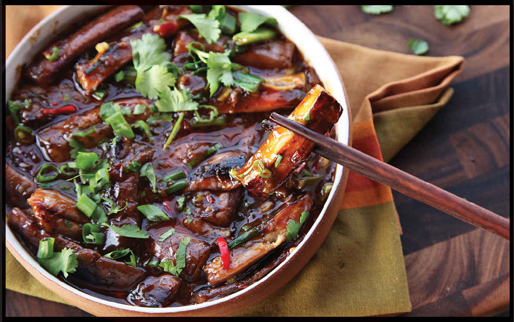
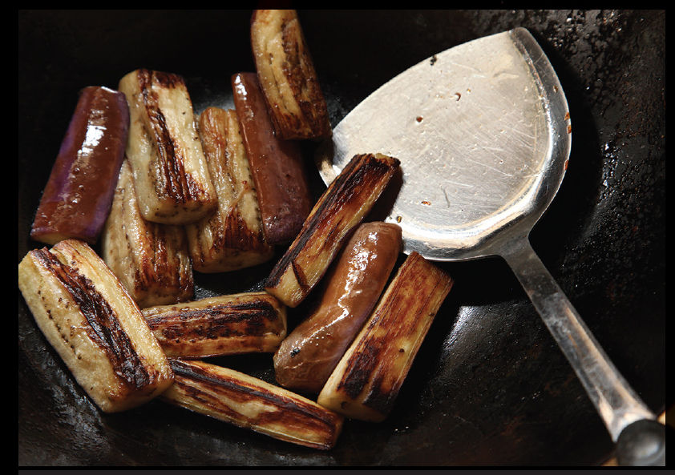
DIRECTIONS
1For the Eggplant: Combine ½ cup (120 g) kosher salt with 2 quarts (2 l) water in a medium bowl. Add the eggplant pieces, cover with a clean paper towel, press down to soak the paper towel in brine, and set aside to soak for at least 10 and up to 20 minutes. Drain the eggplant and spin in a salad spinner or blot dry with paper towels or a clean kitchen towel. Transfer to a bowl, sprinkle with the cornstarch, and toss with your fingertips until lightly coated. Set aside.
2While the Eggplant Soaks, Make the Sauce: Combine the vinegar, pickled chile liquid, soy sauces, sugar, stock or water, salt, MSG, and cornstarch in a small bowl and mix with a fork until no lumps remain. Set aside.
3BEFORE YOU STIR-FRY, GET YOUR BOWLS READY:
- a. Brined eggplant
- b. Ground pork (if using)
- c. Garlic, ginger, chile broad bean paste, scallions, and pickled chiles (if using)
- d. Sauce
- e. Empty bowl for cooked ingredients
- f. Serving platter
4For the Stir-Fry: Heat a wok over high heat until lightly smoking. Add ¼ cup (60 ml) of the oil and swirl to coat. Reduce the heat to medium-high. Add the eggplant and spread into a single layer. Cook, turning the eggplant occasionally, until softened and well browned on all sides, about 4 minutes. Transfer the eggplant to an empty bowl and set aside.
5Return the wok to high heat until lightly smoking. Add the remaining 2 tablespoons (30 ml) oil and swirl to coat. Add the garlic, ginger, chile paste, scallion whites and pale greens, and pickled chiles and stir-fry until fragrant and the oil has become dark red from the bean paste, about 30 seconds. Stir the sauce and add it to the wok by swirling it around the sides. Stir-fry until the sauce is thickened and glossy, about 15 seconds.
6Return the eggplant to the wok and toss to coat in the sauce (if the sauce overthickens and becomes gloppy, thin it out with a splash or water). Transfer to a serving bowl, garnish with the scallion greens and chopped fresh cilantro leaves, and serve.
How to Cut Eggplants for Stir-Fries
There are two ways to cut a Chinese or Japanese eggplant for stir-fries. Which method you choose is up to your own personal taste; both will work equally well.
METHOD 1 • THE ROLL CUT
Roll-cut eggplants form bite-sized wedges.
Step 1 • Trim Off the Stem
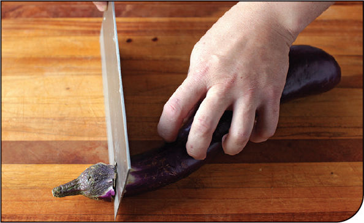
Start by trimming the stem end. I like to pull back the edges of the stem that hang down over the eggplant flesh to maximize the amount of edible eggplant I get from each plant.
Step 2 • Make the First Cut
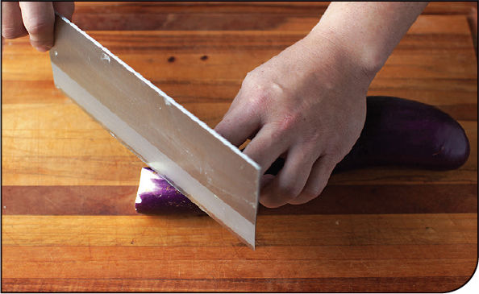
Cut a bite-sized wedge off of the top, holding your knife at a 45-degree angle to the eggplant.
Step 3 • Roll and Cut Again
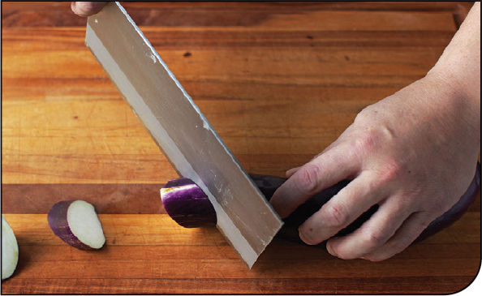
Roll the eggplant away from you by a quarter turn and make another cut at the same angle.
Step 4 • Roll and Repeat

Continue cutting, rolling the eggplant a quarter turn each time you cut until you reach the end.
METHOD 2 • BATONS
Eggplant batons are small bite-sized segments. Start by trimming the stem off the eggplant in the same manner as for a roll cut.
Step 1 • Split Lengthwise
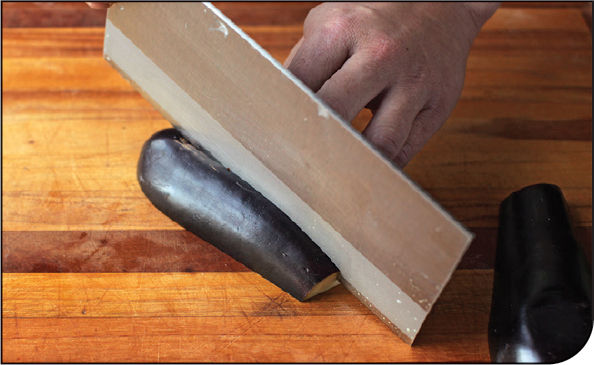
Split the eggplant lengthwise.
Step 2 • Split Again
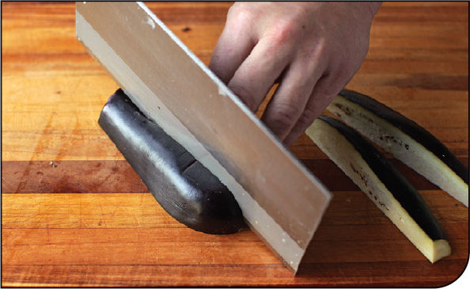
Lay each eggplant half cut side down on a cutting board and split them again. For particularly large eggplants, you may want to split each half lengthwise into thirds or even quarters.
Step 3 • Cut Segments
Cut the eggplant crosswise into 2- to 3-inch batons.
Buying and Salting Eggplants for Stir-Fries
If you’re used to big ol’ globe eggplants—the kind you slice and fry for eggplant Parmesan—the wide range of Asian eggplants available at the Asian supermarket may be baffling to you. If you have access to a well-stocked Southeast Asian market, you’ll find an even wider range, from pure white egg-shaped eggplants (the variety the plant gets its name from) to tiny green eggplants no larger than a pea. But there are really only three varieties you need to know about for most recipes.
 Japanese eggplants are deep purple to black in color and look sort of like miniaturized versions of globe eggplants. They are dense and mildly flavored and work well in both Western and Asian recipes. The best should feel quite heavy for their size.
Japanese eggplants are deep purple to black in color and look sort of like miniaturized versions of globe eggplants. They are dense and mildly flavored and work well in both Western and Asian recipes. The best should feel quite heavy for their size.
Chinese eggplants are longer and skinnier and range from dark to pale purple. They soften and become sweet and dense in stir-fries and are great at absorbing the flavor from sauces. Look for eggplants that have pure white skin underneath their stems and are shiny and blemish-free for the best flavor.
Thai eggplants are round and the size of golf balls. Green are the ones you’ll typically find in Southeast Asian supermarkets in the West, but they also come in purple and white varieties. They are commonly used in green and red curries or sliced raw and used in salads.
For stir-fries I typically reach for Chinese or Japanese eggplants. Either way, simply cutting them and stir-frying them does not work. The eggplants absorb all the oil in the wok, which in turn causes the eggplant to stick and burn. Raw, untreated eggplants also take a long time to cook through, exacerbating the burning problem.
Why is this? It’s because eggplants contain a lot of excess air distributed within a spongy cell network. Air acts as an insulator, which means that heat travels through an eggplant very slowly. This is one of the reasons you always want to buy an eggplant that feels nice and heavy for its size: denser eggplants have less air and will cook more evenly, with better flavor and texture.
So how do you solve this problem? There are a few suggested techniques, and I tested all of them.
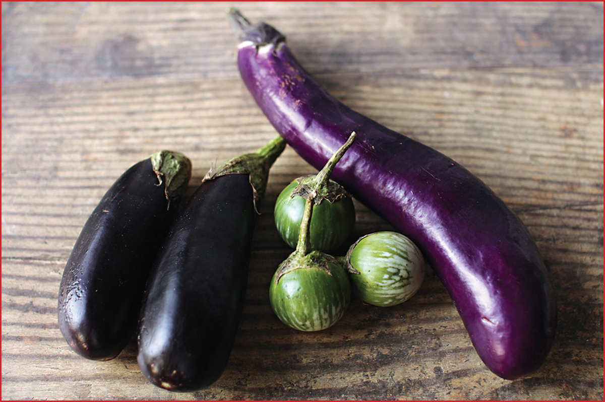
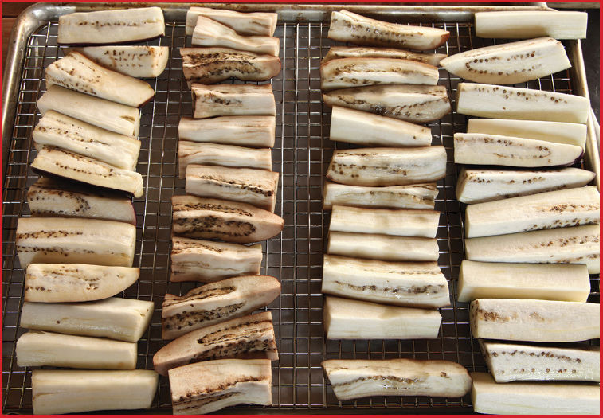
Almost all of the methods you hear about involve an attempt to break down the internal cellular structure of the eggplant either through heating or with the application of salt. In the past I’ve used the steaming method for dishes in which the eggplant is going to be braised until fall-apart tender. It’s simple: put the eggplant slices in a bamboo steamer set over a wok of simmering water and steam them for about 10 minutes until tender.
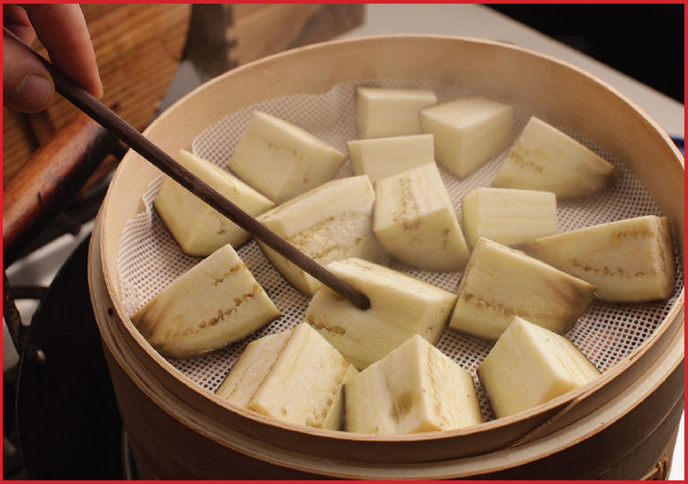
Steaming works great if you’ve got a steamer. Just be aware that it comes out extremely tender when you treat it this way and can only handle a few very brief stirs in the wok without turning to a homogenous mush.
Microwaving the eggplant until cooked through is a technique I use when I’m breading eggplant for American-style eggplant Parmesan, but it’s not ideal for stir-fries. The eggplant pieces end up a little shriveled and lack the velvety texture I’m looking for.
That leaves salting. Typically, salting takes place on dry land. You sprinkle the eggplants with a bit of salt, then let them sit until the salt pulls out excess moisture through osmosis, causing the cell structure to collapse. But I’ve also seen recipes that call for brining eggplant: soaking them in a saltwater solution. This seems counterintuitive to me. Aren’t we trying to get rid of excess moisture? I decided to compare the two methods side by side, also testing them against eggplant soaked in unsalted water and plain, untreated eggplant as a control.
After their brief 10-minute soak in salt water the eggplant pieces did not look all that different, but after drying them with paper towels and weighing them, I found that they actually lost a little weight during their soak. Osmosis would explain this: so long as the concentration of salt outside the eggplant is higher than the concentration of other solutes inside the eggplant’s cell, water from the cells should be forced outward in an attempt to reach equilibrium. Sixty grams of salt for each liter of water—about ¼ cup kosher salt per quart—worked well.
I cooked all four batches of eggplant using the same method in a hot wok with oil, cooking them until lightly charred on the exterior and tender throughout. Both the salted and brined eggplants cooked faster and browned better than their water-soaked or untreated counterparts.
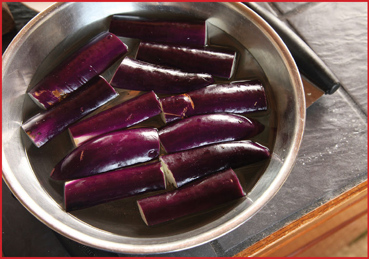
And whaddaya know? The brined eggplant was actually the best of the bunch. It managed to brown and soften while still retaining a nice meaty bite. The salted eggplant came in a close second, but was not quite as easy to cook. Brining eggplant is also easier than salting: salting eggplant requires a big rack to lay the slices out. Brined eggplant is good to go with just a single bowl.
All about Garlic
The aromatic compounds we associate with alliums like garlic and onions are collectively known as lachrymators (from the Latin root for tears), and the one responsible for garlicky aroma is called allicin. Interestingly, they don’t actually exist in raw, unblemished garlic and onions. Those compounds are created only after cells are burst open and precursor chemicals combine and react to form new, pungent molecules. The more active precursor in each cell and the more cells that get ruptured, the more of those compounds are created, so the method by which you cut or mince your garlic can have a profound impact on its flavor, as does the form in which you buy your garlic.
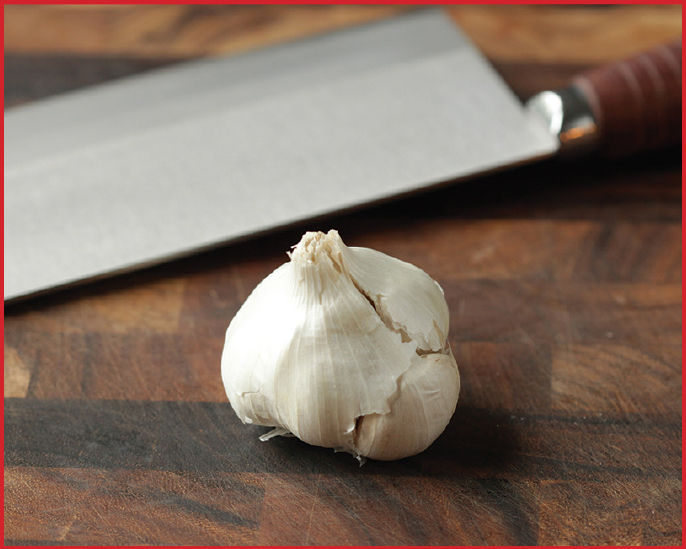
Let’s start with shopping.
At the supermarket, there are really only two forms of garlic you should be considering: whole heads or prepeeled raw cloves.*
As for fresh garlic, because garlic flavor is created as soon as garlic cells are ruptured and increases steadily with time, any form of garlic that comes precut—such as minced garlic, garlic paste, or garlic extract—either will be lacking in fresh garlic flavor or will have a flavor that is far too pungent as the allicin-forming reactions have been allowed to progress for too long. Garlic is one of those ingredients that must be chopped right before use.
In side-by-side tests, I’ve found that in dishes where garlic is the primary flavor or where garlic is served mostly raw, fresh cloves removed from a whole head and peeled just before use have a cleaner, more garlicky flavor than prepeeled raw cloves of garlic, though the latter do just fine the vast majority of the time.
Here are some common methods along with when you may want to employ them:
Crushing in a mortar and pestle is the method I use most of the time. With a heavy granite mortar and pestle, you can get your garlic any texture ranging from lightly crushed to a fine mince, or even a smooth paste in a matter of seconds. If a recipe calls for chopped garlic, this is the way I’m going to do it. (Bonus: for recipes that call for both minced garlic and ginger, you can peel and slice your ginger, then pound it in the mortar and pestle together with the garlic.)
The only downside of this method is that it crushes plenty of cells, so the garlic has a tendency to get pungent unless used within 10 to 15 minutes of crushing. Just make sure you leave the garlic until just before you start cooking and it’ll be just fine.
Mincing with a knife by smashing a clove and then rocking a chef’s knife back and forth or chopping up and down with a cleaver or santoku knife lets you mince as fine as you’d like. Because a sharp knife ruptures fewer cells than a blunt pestle, this method is best for when you intend to use the garlic raw, such as for topping Dan Dan Noodles (here) or incorporating into a smashed cucumber salad (see here). It can also be used for garlic that you are going to stir-fry if you don’t have a mortar and pestle.
Using a garlic press or Microplane squeezes out a ton of garlic juice, which can turn quite pungent and hot just a few moments after pressing. I would not recommend a garlic press or Microplane for any garlic intended to be eaten raw, and if you plan on using it for a stir-fry, your best option is to press or plane it immediately before you start the cooking process to minimize the time between when it’s crushed and when it’s cooked.
Slicing with a knife will give you mildly flavored pieces of garlic that are distinct in the final dish and can be eaten and enjoyed for their flavor and texture like other vegetables. In a dish like Pepper and Salty Shrimp (here), sweet, mild slices of garlic that you can pick up with your chopsticks and eat are almost as essential a part of the dish as the shrimp.
Smashing whole cloves with the side of a knife or cleaver is a good technique for exposing the interior of a garlic clove just enough to allow you to use it to infuse oil for stir-frying. This allows you to impart a sweet garlic flavor without adding excess pungency.
*The other exception is granulated or powdered garlic, which, like powdered ginger, tastes nothing like its fresh form, but it has a flavor all its own and can be useful in spice blends (or for sprinkling on pizza).
How to Cut Garlic for Stir-Fries
Step 1 • Separate Cloves
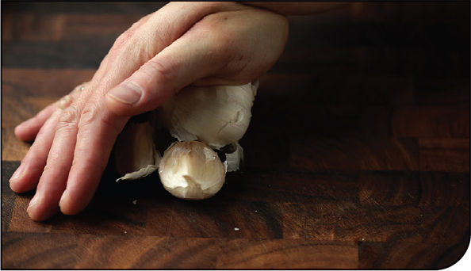
Start by separating a head of garlic into individual cloves by pressing it down and slightly forward against your cutting board with the palm of your hand.
Step 2 • Trim
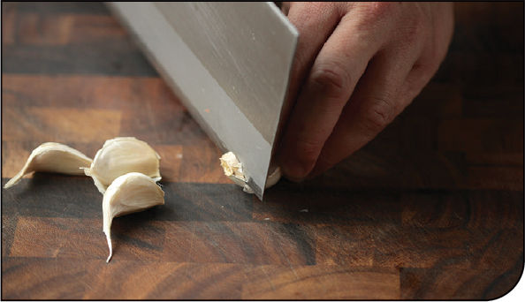
Trim the bottoms off each clove of garlic you intend to use (the rest can be stored at room temperature for a few days or in the fridge for a few weeks).
Step 3 • Gently Smash and Peel
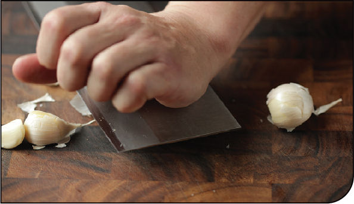
Place the flat side of your knife over a clove and give it a gentle but sharp rap. This will loosen the skin, allowing you to remove it with your fingers.
TO SLICE
Step 1 • Stabilize . . .
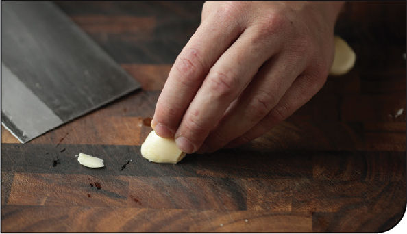
Cut a thin sliver off the widest side of the garlic clove to create a flat surface. Place that surface against the cutting board to stabilize the garlic clove.
Step 2 • . . . and Slice
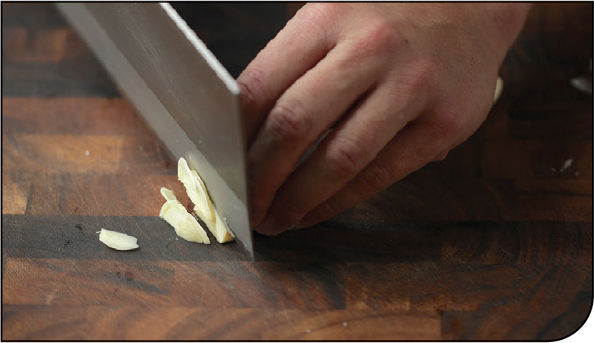
Holding the garlic steady with your non knife hand (remember to keep thumb and fingertips tucked in!), slice it to the desired thickness. Typically this is around ⅛ inch.
TO MINCE WITH A MORTAR AND PESTLE
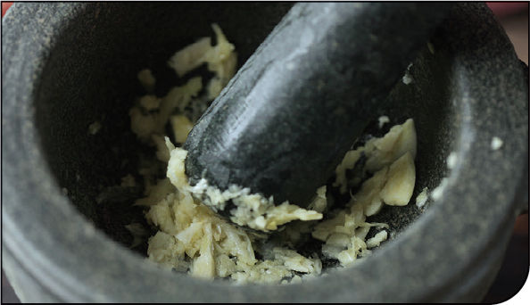
Place the peeled garlic in a mortar with a pinch of salt (this will add friction and keep the garlic from sliding around the bowl too much), then crush it as coarse or as fine as you’d like using the pestle.
TO MINCE WITH A KNIFE
Step 1 • Smash it . . .
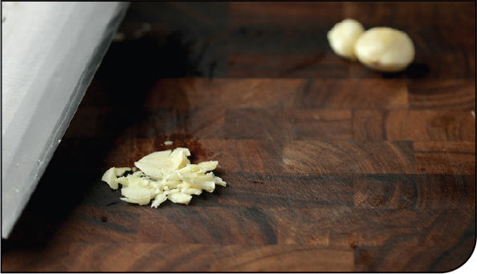
Place the flat side of a chef’s knife or a Chinese cleaver over the garlic and give it a firm rap to crush the cloves and separate the fibers.
Step 2 • . . . and Mince
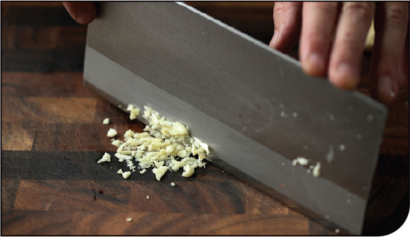
Rock your chef’s knife back and forth or your santoku or Chinese cleaver straight up and down to reduce the smashed clove to as fine a mince as you’d like. Minced garlic should be used immediately.